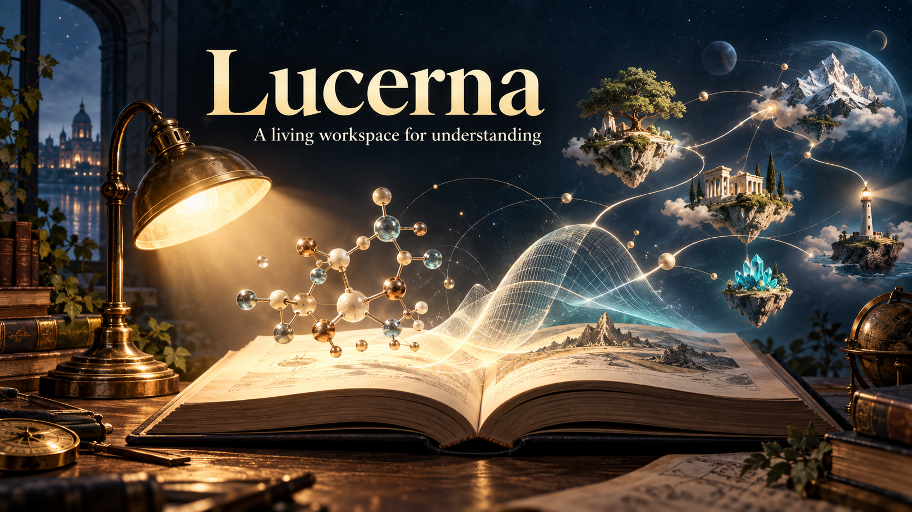

Learn in conversation
Get an explanation at a useful depth, or let your agent build a curriculum and a learning path that adapts with you. Inspect, correct, or erase remembered context.

Lucerna gives your AI agent a place to teach, remember, and build explanations you can explore.
Ask a question, bring a research paper, or begin a longer learning journey. Lucerna connects new ideas to what you already know, keeps track of useful bridges and unfinished questions, and changes the route as your thinking develops.
Get an explanation at a useful depth, or let your agent build a curriculum and a learning path that adapts with you. Inspect, correct, or erase remembered context.
Bring an arXiv paper or local document. Your agent can connect its explanation to relevant passages and show the assumptions behind an illustrative model.
Interactive scenes can show diagrams, plots, calculations, comparisons, and animations. Move a control and see what the change means.
Your local workspace keeps papers, questions, reading position, scene settings, and learning context. Export a single exploration as standalone HTML.
Install the complete Lucerna skill folder in an AI host that can read local skills and run Python 3.10 or newer. Start its local Paper Explorer in a browser. Four included labs—attention, memory and context, chemical equilibrium, and damped motion—are ready to explore immediately.
“Use $lucerna. Help me start a learning workspace and explain something I have been trying to understand.”
Lucerna is free and needs no separate model API key. Your host's normal model and tool costs still apply. Your learning data stays in the workspace you choose.